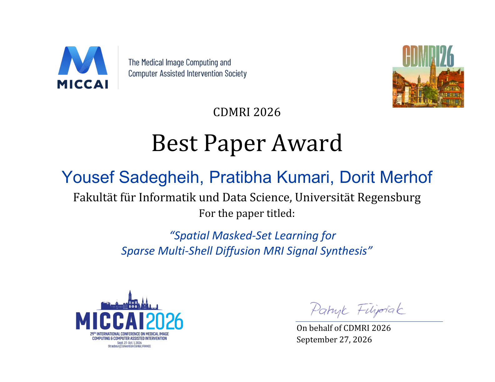

🏆 Award

September 2026
Best Paper Award — CDMRI 2026 (MICCAI)
Our paper Spatial Masked-Set Learning for Sparse Multi-Shell Diffusion MRI Signal Synthesis received the Best Paper Award at CDMRI 2026, held in conjunction with MICCAI 2026.